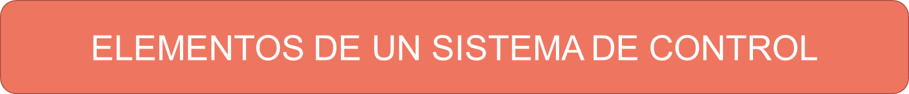
Tarjetas controladoras
Las tarjetas controladoras es un intermediario entre el ordenador y los elementos que se quieren gobernar.
Está conformada por un microcontrolador y diferentes puertos de entrada y salida.
Placa Arduino
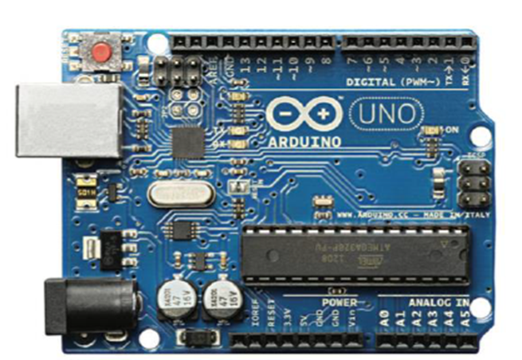
Sensores
Un sensor es un dispositivo capaz de medir magnitudes y transformarlas en una señal eléctrica.
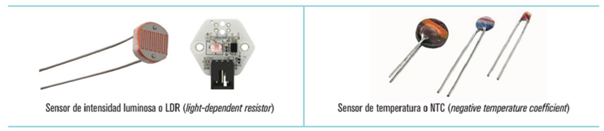
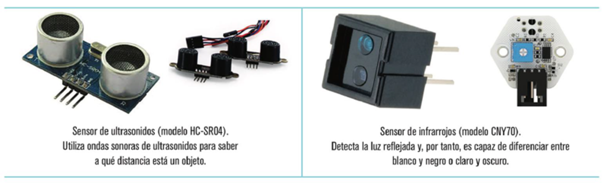
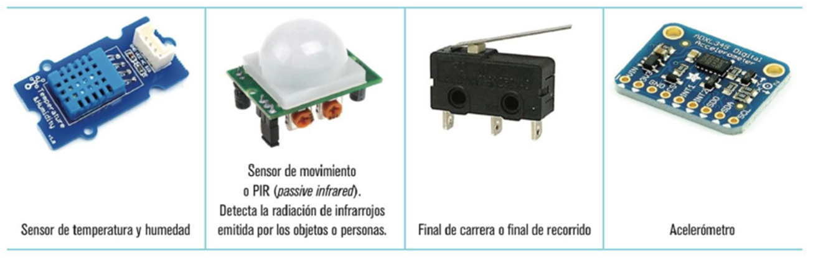
Actuadores
Un actuador es un dispositivo capaz de emplear energía eléctrica para iniciar un proceso.
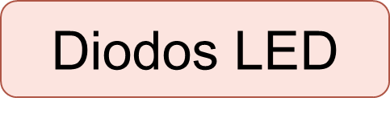 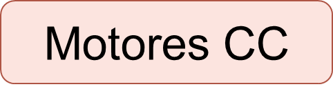 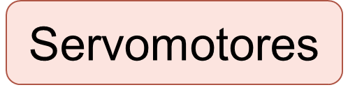
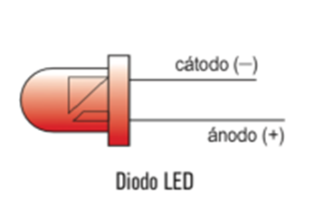 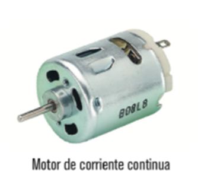 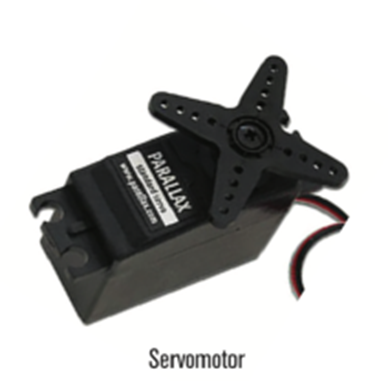